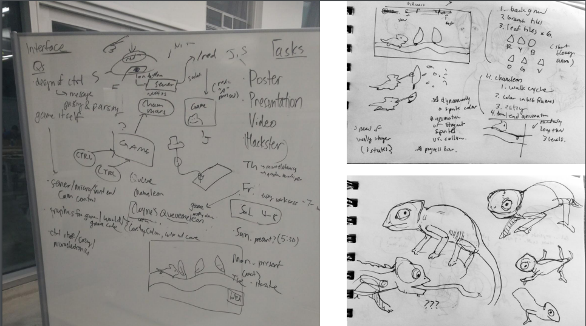
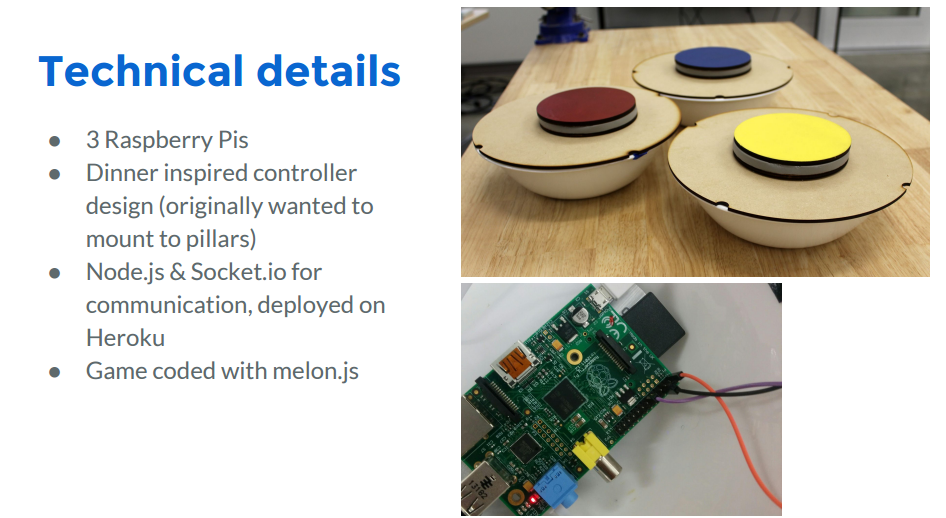
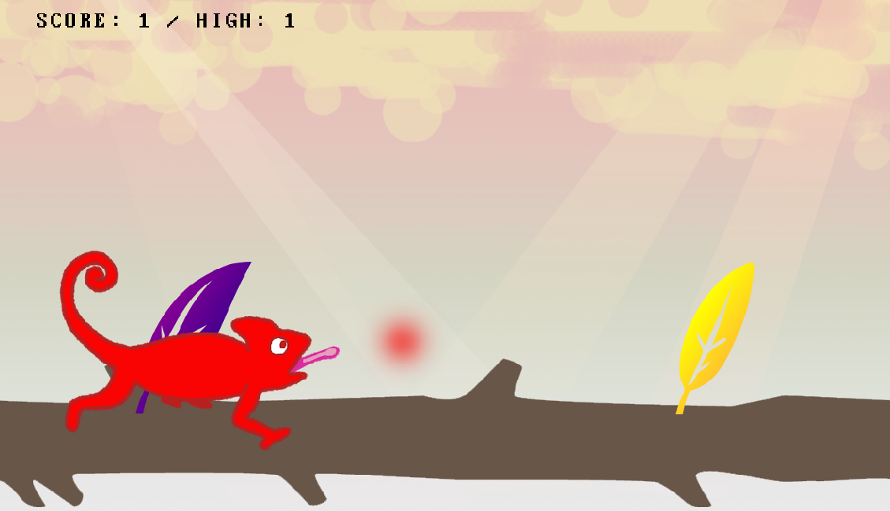

Collaborative "endless walking" game.
Ready, Player One?
Clover is a community oriented video game that aims to reduce social anxiety while waiting, and promote cooperative social interactions between members.
Gameplay
The resulting interaction is not just cooperative, but challenging and funny as you can see in this video.
Transforming the Waiting Experience
As part of Critical Practices, I got the chance to work at the intersection of technological innovation and socially engaged art. For the assignment focused on critical design for community engagement, we chose to focus on the dinner line that forms in the Cloyne Court student housing cooperative — the biggest in the US.
Discovering the Problem
We did participant observations at dinner time for three days and also interviewed residents while they waited to find out more. Based on all our research, we decided to create a better experience for the community that could help its members to experience the dinner line as a time free of social anxiety and stress while promoting interaction between its members. Our aim was to create a more positive experience using a collaborative activity that could serve as a distraction to those waiting in the dinner line. Our choice of a chameleon as the main character was based on the house pet that several Cloyne residents have always wanted (plus color experimentation). Because our community has a set location at the dining room, we wanted to incorporate some of the elements already present there as well. The idea was to transform the waiting line experience using funny and familiar elements to reduce the stress as much as possible.
Level One?
Here are some of the ideas we sketched during our brainstorming.

One of my teammates was a game designer and a resident of Cloyne. Her idea of making a game really got everyone excited. In addition to the web based game, I wanted to create a collaborative element by integrating the physical elements of the space with the digital elements of the game. To retain familiarity, we chose the dinner bowls from the Cloyne dinner hall. We taped our laser-cut buttons on the top and turned them into simple game controllers! Each bowl contained a raspberry pi to transmit user input (pressing the button) over WiFi to our Node.js server.

Instructions
The player has to press a button to make the chameleon change its color to the color of the leaf coming up. The challenge is that there are just 3 buttons: red, blue and yellow. So, a player has to coordinate with other players to match the secondary colors. For example, players need to press red and blue to match a green leaf.
Feedback
Players loved the high score feature, enjoyed the bowl integration, and — get this — were even looking forward to the dinner line the next day. We also found out that there was delay due to the WiFi latency and unclear affordances. It took players a while to figure out that they need to match the color of the next, not current, leaf.
Next Level
In the future in terms of design, we want to revisit controller design & form factors. The bowls were cumbersome and we found it hard to debug the hardware components inside. We also want to explore different feedback methods besides color change (such as music, walking speed).
You can try out the game (minus the cool buttons) at queuemeleon.herokuapp.com on a desktop browser. Click the title screen to begin the game.
